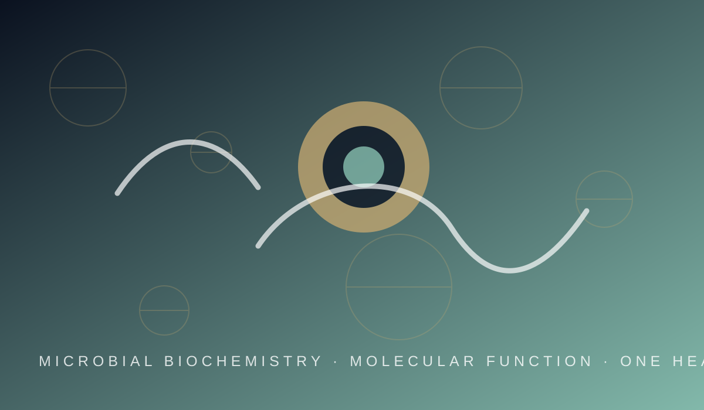

Microbial Biochemistry
Organisms, metabolism, and functional biomolecules
RESEARCH AT HOPE LAB

MICROBIAL BIOCHEMISTRY • MOLECULAR FUNCTION • ONE HEALTH
We investigate microbial biochemistry, molecular function, and the biological interactions that connect organisms with health and their environments.
SCIENTIFIC FOUNDATIONS
Organisms, metabolism, and functional biomolecules
Genomics, glycomics, metabolomics, and biological pathways
One Health, microbial interactions, and environmental sustainability
OUR RESEARCH FRAMEWORK
HOPE Lab explores how organisms, functional biomolecules, and biological pathways shape the functioning, adaptation, and interactions of biological systems with their environments. Our 1H → 2O → 3P → 4E framework connects One Health challenges with the study of organisms and omics, biochemical pathways and functional applications, and the ecological and environmental conditions that shape biological activity. This framework provides a common direction for our research, linking fundamental biological investigation with potential applications in health, food systems, agriculture, biotechnology, and environmental sustainability.
Understanding biological factors connecting human, animal, plant, and environmental health.
Investigating organisms and their molecular profiles using genomics, glycomics, and metabolomics.
Exploring microbial products, biochemical pathways, and their potential applications.
Understanding ecology, adaptation, and function in different environments.
RESEARCH THEMES
Our research examines microbial products, molecular characteristics, and biological interactions from complementary perspectives.
Biological systems produce a diverse range of molecules with important biochemical properties and functions. We investigate microbial exopolysaccharides, pigments, biosurfactants, enzymes, antimicrobial compounds, and other functional metabolites, examining their characteristics, biological activities, and underlying functions. Through biochemical and microbiological approaches, we explore their potential relevance to food preservation, biotechnology, agriculture, and environmental management, while identifying opportunities for further investigation and application.
Health, food systems, and the environment are interconnected through complex biological interactions in which microorganisms play important roles. We investigate beneficial microorganisms, particularly lactic acid bacteria associated with fermented foods, alongside microbial characteristics relevant to host interactions, food safety, and antimicrobial resistance. Our research examines probiotic properties, antimicrobial activities, functional metabolites, and other biological traits to better understand microbial contributions to health and explore their potential applications across interconnected biological systems.
Understanding biological function often requires examining multiple levels of molecular organisation. We use genomics, glycomics, and metabolomics, supported by bioinformatics, to investigate functional potential, metabolic characteristics, and biochemical processes in microorganisms and other biological systems. These complementary approaches help reveal molecular features associated with adaptation, capabilities, and biological activity, providing insights that can guide further experimental research and the investigation of potential biotechnological applications.
Biological functions are shaped by the environments in which organisms live and by their interactions with other organisms. We investigate microbial communities and adaptation across fermented foods, host-associated environments, plant-associated niches, extreme habitats, and polluted environments. This work examines how ecological conditions influence microbial persistence, biological activity, and potential relevance to health, agriculture, food systems, and environmental management.
A BROADER BIOLOGICAL CONTEXT
Biological functions are shaped not only by molecular mechanisms but also by the interactions between organisms and their surrounding environments. Across these research areas, HOPE Lab seeks to understand the biochemical mechanisms, molecular features, and ecological interactions underlying biological functions. We combine experimental biochemistry and microbiology with genomic, molecular, and computational approaches to investigate biological questions from different perspectives. Our findings seek to provide a foundation for further research into functional biomolecules, beneficial microorganisms, microbial risks, and environmentally relevant biological processes. Through this work, we aim to advance fundamental understanding while exploring evidence-based possibilities for applications in health, food systems, agriculture, and biotechnology.
Explore research outputs